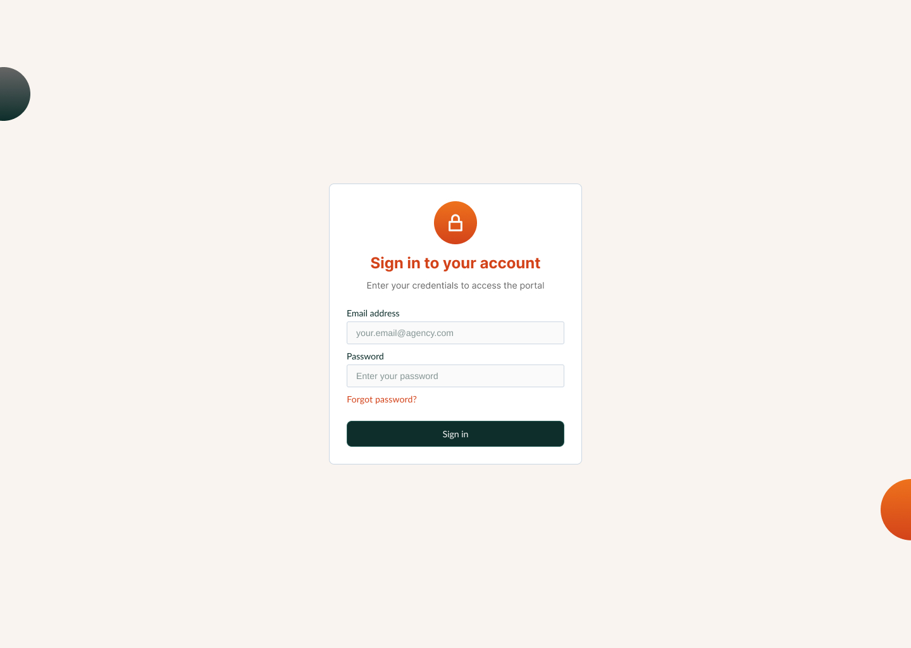

Introducer Portal
Redesign
A mobile-first rebuild of the estate-agent referral experience—aligned to client-facing brand while staying production-ready for fast lead handoff and ongoing status visibility.
Introducers submit mortgage referrals with clear next steps: capture client details, track each case, and update records without relying on ad hoc email. The product combines a structured referral form, proactive notifications, and progress affordances so agents always know what to do next—functioning as both workflow tool and lightweight knowledge surface.
Speed to contact
4hrs → 15mins
Lead conversion
+45%
Data handling
GDPR-aligned
Before
The original experience
Agents lacked a credible pipeline view: referrals lived in inbox threads, data was incomplete, and there was no shared feedback loop with advisors. Trust eroded whenever a lead went quiet with no observable state change.


Audience and jobs to be done
Estate agents regularly introduce clients to mortgage advice but typically do not sell regulated products themselves. Under partnership agreements they refer prospects; our job was to make that handoff disciplined, timely, and legible end to end.
The redesigned experience concentrates on repeatable tasks: submit a referral with the right fields, see where each case sits, and surface the next interaction—reducing ambiguity for non-technical users who live on their phones between viewings.



Mobile-first visuals and confidence
We prioritised breakpoints agents actually use: large tap targets, predictable scrolling regions, and status language that mirrors consumer apps so the portal feels familiar rather than “internal IT.”
Visually we stayed inside the broader client design language—enough continuity that introducers sense the same institution they already trust, with layout and component hierarchy tuned for referrers rather than end borrowers.
That balance—shared tokens and typography with introducer-specific patterns—is the same contract I use when pairing with engineering: a thin, documented component set so implementation stays maintainable as marketing and compliance evolve.


Referral flows and navigation model
Core journeys share a consistent scaffold: authentication, dashboard context, then task-specific screens. Where the product needs a persistent shortcut back to high-level actions, a fixed bottom navigation pattern keeps orientation—without duplicating every affordance on every view.
Tracking steps reuse the same structural grid across states so engineering could ship modular templates; only content and emphasis change between “awaiting advisor” and “ready for client.” Edge cases (for example hiding “Refer a client” when it would conflict with in-flight work) are treated as conditional layout rules rather than one-off screens.


Responsive shell
Implementation notes
Desktop keeps two-up marketing density; phones collapse to a single column with touch-first chrome. Tailwind breakpoints mirror what I'd document for engineering.
<div class="grid grid-cols-1 md:grid-cols-2 gap-6 max-w-xl mx-auto">
<!-- introducer cards stack on < md -->
</div>Outcome
Problem
Commission was at risk when referrals disappeared into email. Advisors received partial information, and both sides blamed process instead of fixing the system.
Direction
A single source of truth for referral state gave agents pipeline visibility and gave advisors cleaner intake. The UI stayed deliberately calm—closer to consumer patterns—to maximise adoption among time-pressed introducers.